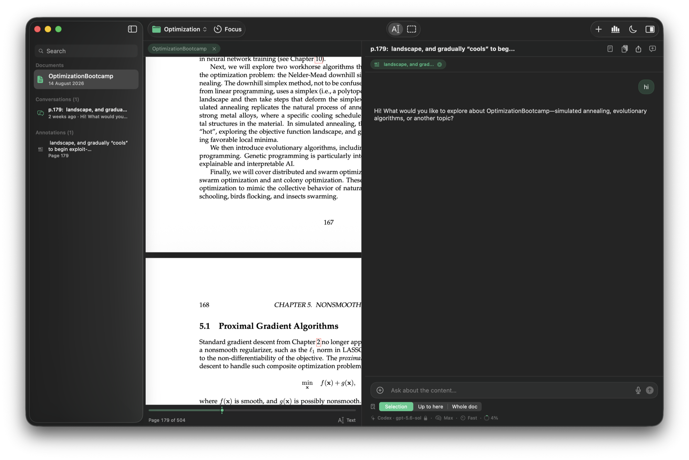
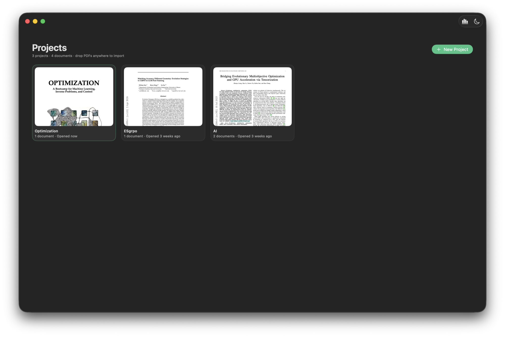

A native Mac reader where you converse with what you're reading. Built on Codex, so the AI runs on the ChatGPT plan you already pay for.
Johannes Vermeer, The Astronomer, 1668 · Musée du Louvre
what it is
Select a passage or draw a box over a figure, choose how much of the document the model sees, and ask. Every answer is anchored to the page. When a reply says “p. 12”, you click it and you're there.

the reading tool, not a chatbot with a file picker
One tap decides what the model reads: your selection, everything up to your page, or the whole book. Context is never re-sent when it hasn't changed.
Draw over any figure or equation and ask. Captures travel with the conversation as annotations, mapped to their place in the document.
Projects, documents, annotations, conversations, all local. A focus timer, a heatmap of your days, and your plan usage in the footer. ⌘F finds anything.
how it works
Internalize contains no AI of its own. It drives Codex, the agent inside OpenAI's ChatGPT app, on your Mac and on your account. That's why it's free.
Codex ships inside the ChatGPT app for Mac. Sign in with your ChatGPT account. If you already use Codex on this Mac, you're done.
Open the DMG, drag to Applications, launch. Signed and notarized, no warnings, no setup, and it updates itself from then on.
Drop a PDF on the welcome screen, select anything, and ask. Your documents, annotations, and conversations persist in projects, locally.

Johannes Vermeer, The Geographer, 1669 · Städel Museum
privacy
The only network traffic is your own AI requests, through your own Codex installation.
We operate zero servers. Verify it with any network monitor.
You sign in inside the ChatGPT app; Internalize only reads that it's there.
Read-only sandbox, approvals off, an isolated profile with browser, computer and app access switched off. It can answer. It can't act.
questions, answered honestly
Really free, and open source. The expensive part of AI apps is the AI. Internalize sidesteps that by running on the ChatGPT plan you already have, through Codex on your machine. There's no catch to monetize; if the app earns a place in your reading life, there's a tip jar.
Codex is OpenAI's local agent, and its app-server protocol is the documented way for third-party software to integrate it. That's what lets Internalize give you frontier-model conversations with zero API keys and zero per-token costs. Your plan, your machine, your data.
No. You sign in inside the ChatGPT app. Internalize never handles credentials. It runs Codex in an isolated, read-only profile, so your personal Codex setup is untouched and the app can't perform actions through it, only conversations.
macOS 15 or newer, Apple Silicon and Intel (universal binary). The app is signed with an Apple Developer ID and notarized, and ships its own one-click updates.
The App Store sandbox forbids apps from launching external programs, which is precisely how Internalize drives Codex. Direct distribution with Apple's notarization gives you the same malware-scanned safety without that limitation.